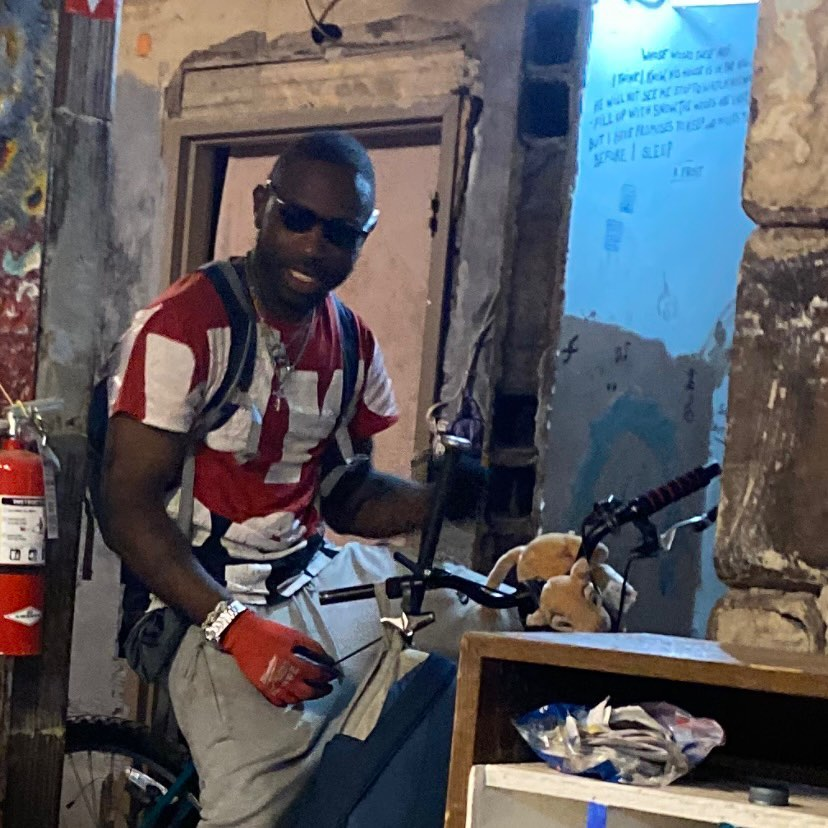

Timeline photos
This is my friend John. (John Don The Juan, as he likes to be called.)
He has been a huge source of difficultly at our house. He brutally beats his girlfriend. He believes through past lives he rightfully owns everything in the world. So he takes anything and everything he wants.
We had trespassed him from our house. But because he believes he owns everything that just makes him mad.
He hates locked doors. He constantly breaks our doors and windows. If there is a locked door he will often break it down.
The police surrounded our house last night because they found out he was there. He refused to come out for a while. But he eventually did. And they took him into custody.
I believe he and his girlfriend, Heather (who is also currently in jail) may have been involved in that 13 year girl’s death.
I am probably as socially libertarian as you will find. I don’t believe it’s any of my business what another person does with their life… as long as they don’t hurt anyone else.
There are these seriously mentally ill people that are too dangerous to have on the streets. Every American city I go to I encounter them.
I thought John was going to go down for killing his girlfriend. But that hasn’t happened, yet. But maybe he’ll be tied to this other death.
We MUST figure out a way to get these violent mentally ill people off the streets. Maybe this 13 year old would still be alive if we had been able to get John into a mental hospital months ago.
#mentalillness